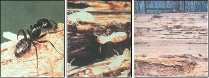

(CARPENTER ANT AND TERMITE PHOTOS BY THE USDA)
(FROM LEFT) a carpenter ant . . . or termites . . . The intricate tunnelings in this split-open log demostrate the origin of the name ""carpenter ant"", and a sure sign that intruders have been working in your wood. The insect can weaken a building to the point where it will collapse.